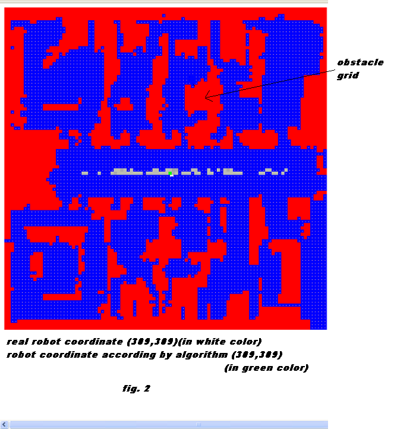
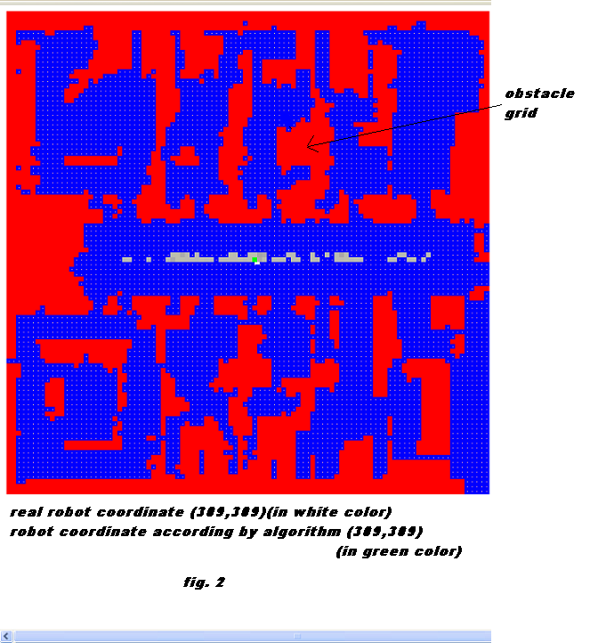

Localization has proven to be the most critical aspect of mobile robot navigation. Generally indoor localization is achieved with the aid of maps over and above dead reckoning. Indeed a mobile robot localizing purely based on its odometry gets lost very soon due to the diverging nature of such errors, rendering it useless for any application or task. Hence indoor robots need external navigational aids or references to correct such errors, which has been the key challenge of any localization task.
Localization methods that involve the use of an a-priori known map are traditionally classified in two paradigms; global and local localization .
Global localization is the problem of estimating the state (pose) of the robot in a known map without an initial estimate of its state. The challenge is that in the absence of an initial guess the problem cannot be modelled with unimodal probability distribution leading to a search over all possible poses or states of the robot. The search is inevitably exponential in state dimensions
Local localization is the problem of estimating the robot's state in a given map. State here could be either location of the robot represented as (x,y) coordinates in a reference frame or it could denote a configuration of the robot represented by its location and orientation i.e., (x,y,theta). The map could be a map of line segments or a map of grids. For example in the figure below a grid map is represented with obstacles are shown in red, the non-obstacle areas in blue. The robot is shown in white and virtual robot is shown in green. The map and the robot are represented in the same reference frame. Let the origin of the reference frame be the top left corner of the map(0,0)(fig.1) , then a location on the obstacle indicated by the arrow has its coordinates as (369,165) and the robot's location in the same map (fig.2) is (309,309).
The problem of global localization is for the robot to determine its location in the map, i.e., it has to possess an algorithm that can output the robot's location as (309,309) in the map. Note that the robot is actually unaware of its location but is in possession of the map.
 

Fig.1 is showing the origin of the reference frame as (0,0) at the top left of the map (black dot) and denote the location of the robot as () in (white dot).
An analogy can be drawn of a man with a city map trying to find a particular place in an unknown city. In order to use the city map, the man must first determine his position within the city. For example, it is sufficient even if he can locate in the street in which he currently is, in the city map. To do so, he can look around and compare his observations with the information represented in the map. Here, such an observation can be for example a road sign, a junction, a sign board or a landmark. This is global localization.

We develop a method of reprojection to achieve the objective set out for a fast global localization algorithm. The links to the presentation that delineates the algorithm is given in the links below

The objective of this lab is to develop a fast global localization algorithm that avoids searching in the space of all possible locations or configurations of the robot and as faithfully reproduce localization results comparable to other global localization methods such as Markov and Particle Filter methods. See virtual labs on Markov and Particle Filter based localization methods.


Nothing Here.

- Why do you think that the method of Fast Localization by Reprojection of sensor readings is faster than the popular probabilistic methods in literature?
- Do you think this method will be faster even if the number of boundary cells is more than the number of free cells? (You may want to check the proof presented in "Global Localization of Mobile Robots by Reverse Projection of Sensor Readings", presented at IEEE International Conference on Robotics and Bio-mimetics, 2008)
- When do you think this method will be unequivocally faster than the other approaches presented in this Virtual Lab on Mobile Robotics
- For the first sensor update where the initial position of the robot is unknown and all cells have equally likely possibility of the robot being present there?
- For the subsequent sensor updates when there is an initial guess of the robot's position or in other words where some cells are more likely to have the robot than other cells.
- How does the cell resolution affect the accuracy of the results? Do you think the current method will be less adversely or more adversely affected by cell resolution when compared with other localization methods presented in the Virtual Labs. Explain?


- D. Fox, W. Burgard, and S. Thrun, “Active markov localization for mobile robots”, Robotics and Autonomous Systems., 25, 195-207, 1998.
- Frank Dellaert, Dieter Fox, Wolfram Burgard, and Sebastian Thrun, ”Monte-Carlo Localization for Mobile Robots,” IEEE International Conference on Robotics and Automation (ICRA99), May, 1999.
- F Lu and E Milios, “Robot pose estimation in planar environments by matching range scans”, Journal of Intelligent and Robotic Systems, 1997.
- J J Leonard and H F Durrant-Whyte, “Directed Sonar Sensing for Mobile Robot Navigation”, PhD thesis, University of Oxford, 1992.
- Konolige, K. and K. Chou, “Markov Localization by Correlation”, Proc of IJCAI, 1999.
- R. Simmons and S. Koenig. “Probabilistic robot navigation in partially observable environments”, In Proc. of the International Joint Conference on Artificial Intelligence (IJCAI), 1995.
- L. Guibas, R.Motwani, and P. Raghavan, The robot localization problem, SIAM J. Computing 26 (1997), no. 4, 1120.1138.
- M Rao, G Dudek, and S. Whitesides,”Minimum Distance Localization for a Robot with Limited Visibility”, Proc of ICRA, 2005.
- D Fox, “Adapting the Sample Size in Particle Filters Through KLD-Sampling”, Intl. Journal of Robotics Research, 22, 2003.